couleurs
version 0
[X]: A faire
[Maj à prévoir]
1 Colorpalette
1.1 Sources et installation
Sources: http://repec.sowi.unibe.ch/stata/palettes/index.html https://www.stata-journal.com/article.html?article=gr0075 https://boris.unibe.ch/116571/1/Jann-2018-palettes.pdf
Installation via ssc
ssc install palettes, replacessc install colrspace, replace
Installation de grstyle pour charger et utiliser une palette * ssc install grstyle, replace
Autres sources
- Librairie particulièrement complète de palettes de couleurs: https://www.w3schools.com/colors/default.asp
- Colorbrewers: https://colorbrewer2.org/#type=sequential&scheme=BuGn&n=3
1.2 Syntaxe et exemples
Visualiser une palette
colorpalette nom_palette [, options] La palette par défaut de Stata est la palette s2 (15 couleurs) utilisée par le thème par défaut s2color:
colorpalette s2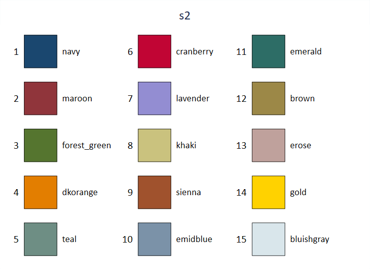
- Lorsqu’on fait un graphique, les couleurs utilisées pour chaque objet (courbes par exemples) suivent l’ordre d’affichage de la palette: (1) “navy”, (2) “maroon”, (3) “forest green”…….
- On peut forcer la commande à afficher le code RGB:
colorpalette s2, force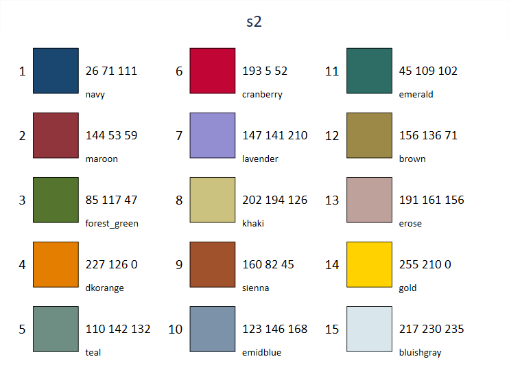
- On peut sélectionner une partie de la palette (très utile au final - voir plus loin)
colorpalette nom_palette, select(numlist)Exemple
colorpalette s2, select(1 6 14)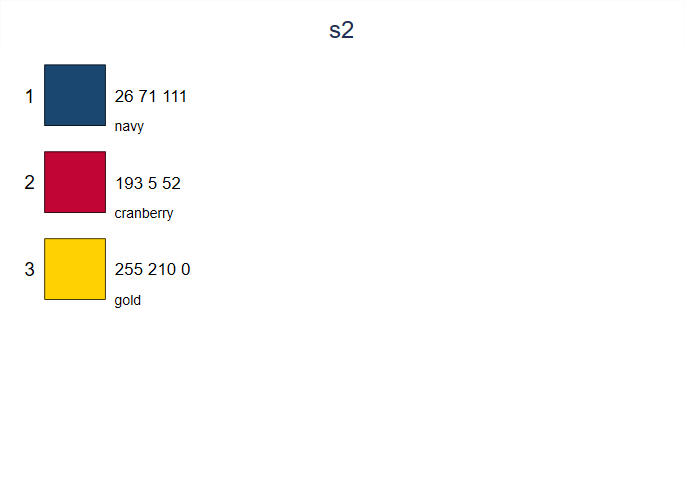 >
- On peut réduire la taille de la palette [très utile]
colorpalette nom_palette, n(#)- On veut donner un aspect plus “pastel” à la palette: option
intensity- La commande
colorpalettepermet également d’utiliser toutes les options graphiquestw. En modifiant les couleurs, le code couleur a plus d’arguments et empiète sur le numéro de la couleur juste à sa droite. J’utilise l’option `scale(#)’ pour réduire la taille de tous les éléments présent dans le graphique (colorpalette génère des graphs), ici avec une échelle d’affichage de 90%. - L’option
intensity(#)permet de baisser (vers le pastel) ou d’augmenter l’intensité des couleurs
- La commande
colorpalette s2, intensity(0.50) force gropts(scale(0.9))Intensité à 0.5
- On peut visualiser l’effet au niveau des couleurs du changement d’opacité (transparence) avec l’option
opacity(#)[# de 0+ à 100-]
colorpalette s2, opacity(50) force gropts(scale(0.9))50% de transparence
- Toutes les options disponibles (derniere version dans dépôt Stata)
Main
n(#) size of the palette (number of colors)
select(numlist) select (and order) the colors
order(numlist) order the colors
reverse arrange palette in reverse order
opacity(numlist) set opacity, in percent
intensity(numlist) set color intensity multipliers
ipolate(spec) interpolate the colors
intensify(numlist) modify intensity
saturate(spec) modify saturation (colorfulness)
luminate(spec) modify luminance (brightness)
gscale[(spec)] convert to grayscale
cblind[(spec)] simulate color vision deficiency
other palette-specific options
Technical
forcergb enforce translation to RGB
noexpand omit automatic interpolation/recycling
class(class) set palette class1.3 Utilisation des macros générées par colorpalette
- Colorpalette enregistre les noms ou codes des couleurs sous forme de macro (
return list) - Ces valeurs peuvent donc être utilisée automatiser la sélection des couleurs
colorpalette s2, nograph
return list
. return list
scalars:
r(n) = 15
macros:
r(ptype) : "color"
r(pname) : "s2"
r(pclass) : "qualitative"
r(p) : ""26 71 111" "144 53 59" "85 117 47" "227 126 0" "110 142 132" "193 5 52" "147 141 210" .."
r(p15info) : "bluishgray"
r(p15) : "217 230 235"
r(p14info) : "gold"
r(p14) : "255 210 0"
r(p13info) : "erose"
r(p13) : "191 161 156"
r(p12info) : "brown"
r(p12) : "156 136 71"
r(p11info) : "emerald"
r(p11) : "45 109 102"
r(p10info) : "emidblue"
r(p10) : "123 146 168"
r(p9info) : "sienna"
r(p9) : "160 82 45"
r(p8info) : "khaki"
r(p8) : "202 194 126"
r(p7info) : "lavender"
r(p7) : "147 141 210"
r(p6info) : "cranberry"
r(p6) : "193 5 52"
r(p5info) : "teal"
r(p5) : "110 142 132"
r(p4info) : "dkorange"
r(p4) : "227 126 0"
r(p3info) : "forest_green"
r(p3) : "85 117 47"
r(p2info) : "maroon"
r(p2) : "144 53 59"
r(p1info) : "navy"
r(p1) : "26 71 111"- la macro r(p) contient donc tous les codes couleurs de la palette s2
di r(p)
"26 71 111" "144 53 59" "85 117 47" "227 126 0" "110 142 132" "193 5 52" "147 141 210" "202 194 126" "160 82 45" "123 146 168" "45 109 102" "156 136 71" "191 161 156" "255 210 0" "217 230 235"- On pourra donc utiliser cette macro pour indiquer les couleurs qui seront utilisées dans le graphique
Exemple
sysuse uslifeexp.dta
tw line le le_male le_female year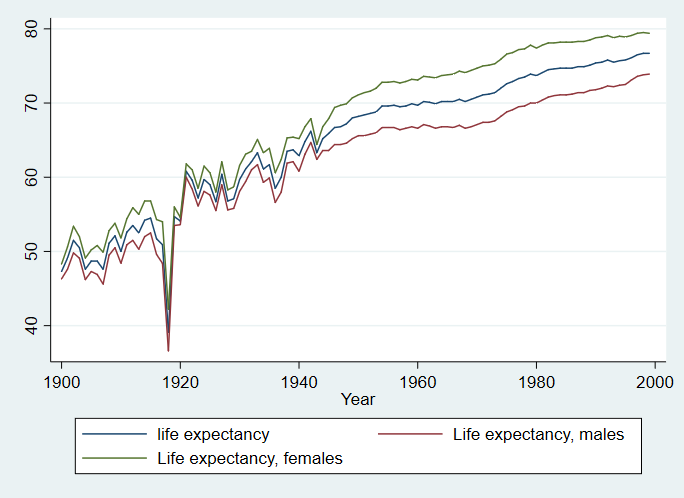
Les couleurs des trois courbes sont bien les trois premières couleurs de la palette s2.
Si on souhaite utiliser les couleurs (5,6,14) au lieu des couleurs (1,2,3) de la palette complète + une intensité de 1.2:
colorpalette s2, select(5 6 14) intensity(1.2) nograph
tw line le le_male le_female year, lc(`r(p)')Rappel: lc() est l’expression tronquée de lcolor() [line color]
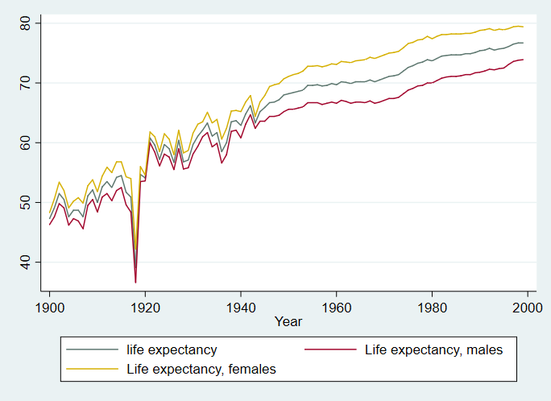
1.4 Utilisation d’une palette de couleurs avec grstyle
- Les options et la récupération des couleurs sélectionnées sont également intégrées à la commande
grstylede Ben Jann [grstyle set color [options]] - En sélectionnant cette fois-ci les couleurs (1,6,4) de la palette s2 et en customizant légèrement le graphique:
grstyle init
grstyle set legend, nobox stack
grstyle set plain, horizontal grid compact
grstyle set mesh, horizontal
grstyle set color s2, select(1 6 4)
tw line le le_male le_female year, legend(cols(3))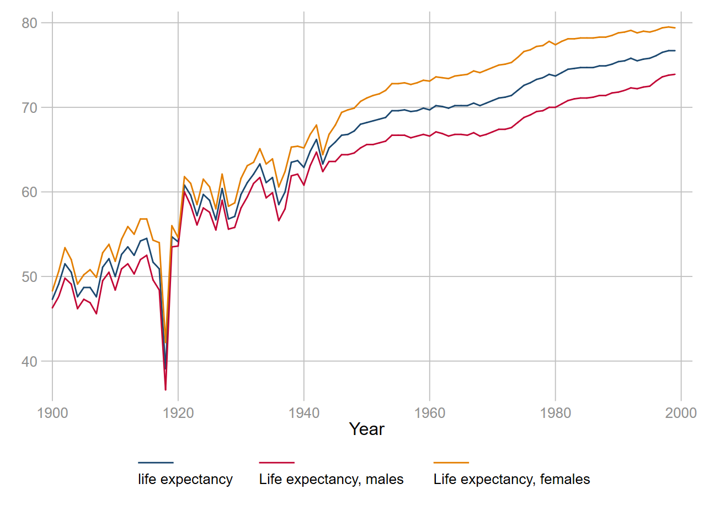
1.5 Cas d’un graphique à plusieurs composantes
Avec colorpalette
- Pour un graphique à plusieurs composantes [
tw (objet1) (objet2)...] ou [tw objet1 || (objet2 ||...] , on ne peut pas utiliser d’un bloc tous les codes couleurs avecr(p) - On doir inséré la macro de chaque composantes dans ses options
r(p1),r(p2)…. La modification des couleurs est néanmoins automatisée aveccolorpalette
Exemple
colorpalette s2, select(6 14) opacity(50) nograph
local opts mlc(black) mlw(vthin)
tw (scatter price mpg if foreign==0, mc(`r(p1)') `opts') ///
(scatter price mpg if foreign==1, mc(`r(p2)') `opts'), ///
legend(order(1 "Domestic" 2 "Foreign"))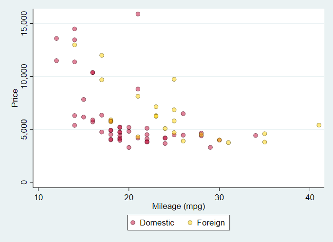
Avec grstyle
- Avec
grstylela procédure est simplifiée au niveau du graphique, l’option pour la couleur de remplissage des marqueurs est chargée avecgrstyle set color s2, select(6 14) opacity(50)
grstyle init
grstyle set legend, nobox stack
grstyle set plain, horizontal grid compact
grstyle set mesh, horizontal
grstyle set color s2, select(6 14) opacity(50)
local opts mlc(black) mlw(vthin)
tw (scatter price mpg if foreign==0, `opts') ///
(scatter price mpg if foreign==1, `opts'), ///
legend(order(1 "Domestic" 2 "Foreign"))Remarque: grstyle permet également de paramétrer la couleur et l’épaisseur des contours des marqueurs
1.6 La palette de couleur de ggplot2
- Avec
colorpalette, le nom de la palette utilisée par le standard ggplot2 est hue (15 couleurs par défaut)
colorpalette hue
- La sélection automatique des couleurs sur une palette à 15 éléments ne donne pas un résultat pertinent niveau visualisation
sysuse uslifeexp.dta
*set scheme s2color
colorpalette hue, nograph
tw line le le_male le_female year, lc(`r(p)')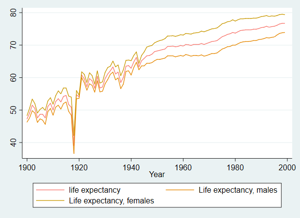
- Il convient donc:
- de sélectionner des couleurs adaptées pour éviter les effets de dégradé qui ne sont pas les bienvenus dans certains graphiques. On peut donc:
- utiliser l’option
select(#)pour générer une palette pertinente au niveau des couleurs et de l’ordre d’utilisation - Utiliser l’option
n(#)[# taille de la palette]:
- utiliser l’option
- de sélectionner des couleurs adaptées pour éviter les effets de dégradé qui ne sont pas les bienvenus dans certains graphiques. On peut donc:

En abcisse l’ordre des couleurs, en ordonnée la taille de la palette
- Comme le graphique précédent est composé de trois courbes, on utilise l’option
n(3)àcolorpalette:
sysuse uslifeexp.dta
*set scheme s2color
colorpalette hue, n(3) nograph
tw line le le_male le_female year, lc(`r(p)')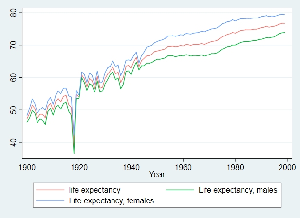
Avec `grstyle``
grstyle init
grstyle set legend, nobox stack
grstyle set plain, horizontal grid compact
grstyle set mesh, horizontal
grstyle set color hue, n(3)
tw line le le_male le_female year, legend(cols(3))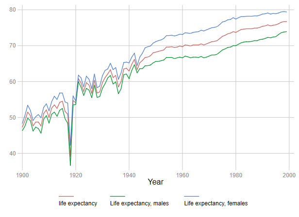
Rappels sur les courbes: attention au nombre de courbes affichées dans un même graphique, cela peut devenir illisible (effet spaghetti)
2 Exemples de palette
[A voir: mettre quelques exemples de graphiques]
- Se reporter à l’aide de
colorpalette, il est possible de visualiser directement un nombre impressionnant de palettes de couleurs - Trois type de palettes:
- Les palettes qualitatives: on mixe plusieurs types de couleurs (bleu, rouge, jaune, vert…)
- Les palettes divergentes: on va d’une couleurs à une autre (du bleu au rouge) en altérant l’intensité avec une couleur de transition généralement proche du blanc. Ces palettes peuvent être rendues qualitative en réduisant la taille de la palette
- Les palettes séquentielles: on baisse (ou augmente) l’intensité d’une seule couleur (bleu vif vers le blanc ou l’inverse)
2.1 Palette Stata
Palettes de types qualitatives

2.2 Palettes thèmes externe Stata
Palettes de types qualitatives
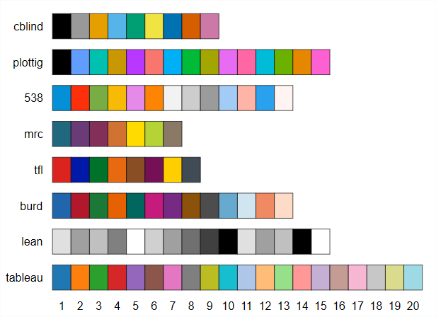
2.3 HCL
`coloraplette hcl, nom_sous_palette [options]`2.3.1 Qualitatives
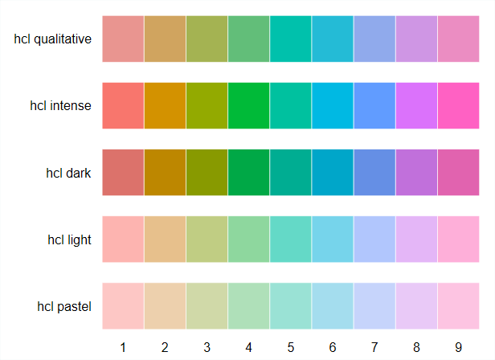
- La palettes hcl intense est identique à la palette hue de la section précédente, ici avec 9 couleurs
n(9) - Si on veut afficher et utiliser la palette hcl qualitative avec les valeurs RGB:
coloraplette hcl, qualitative force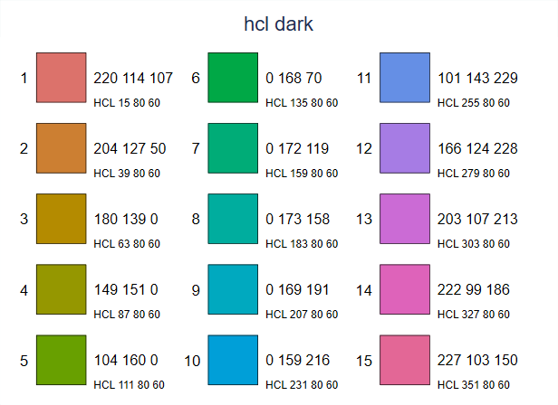
2.3.2 Séquentielles
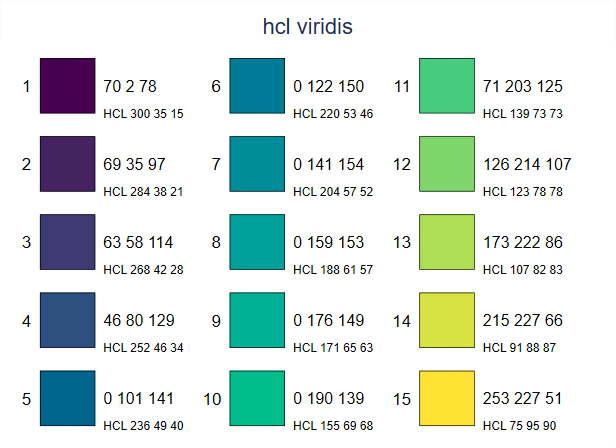
La palette VIRIDIS est très populaire en dataviz, et peut-être utilisée comme une palette qualitative avec un nombre limité de couleurs
Palette Viridis à 4 couleurs
2.3.3 Divergentes
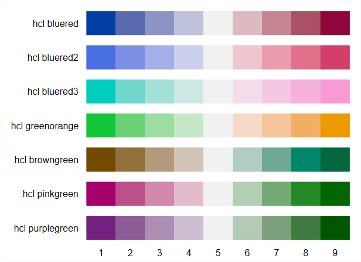
2.4 HSV
Proche de la précédentes avec, me semble t-il, des intensités plus élevées
coloraplette hsv, nom_sous_palette [options]2.4.1 Qualitatives
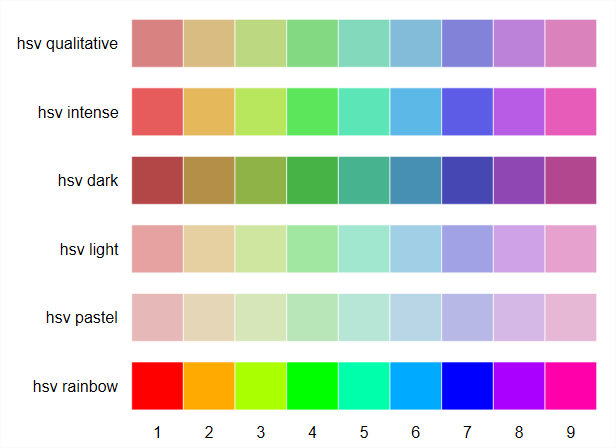
2.4.2 Séquentielles
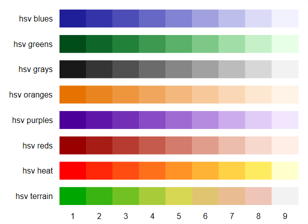
2.4.3 Divergentes
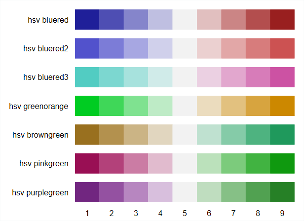
2.5 Colorbrewer
https://colorbrewer2.org/#type=sequential&scheme=BuGn&n=3
`coloraplette nom_palette [,options]`2.5.1 Qualitatives

2.5.2 Séquentielles
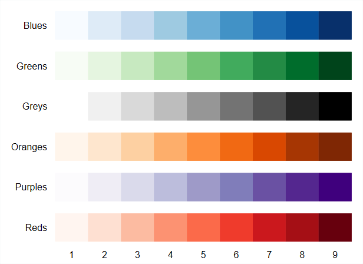

2.5.3 Divergentes

2.6 Viridis
- Voir plus haut les palettes hcl
- Les palettes viridis sont régulièrement utilisées avec Python
- Elles sont plutôt de type séquentielles ou divergentes
- On peut les rendre qualitative en réduisant la taille de la palette
n(#)
coloraplette nom_palette [,options]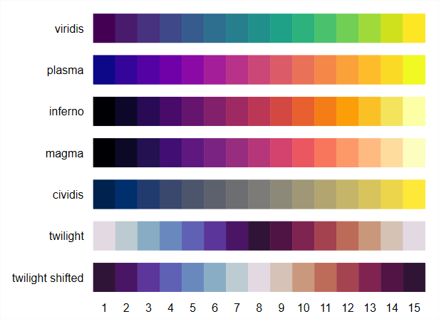
Palettes à 4 couleurs
2.7 Matplotlib
Palettes des objets graphiques de la librairie matplotlib de Python
coloraplette matplotlib, nom_sous_palette [options]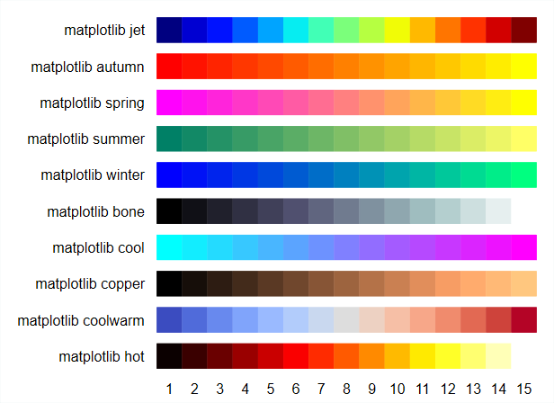
Palettes à 4 couleurs
2.8 Ptol
3 types de palette: qualitative, divergente et de type arc en ciel
coloraplette ptol, nom_sous_palette [options]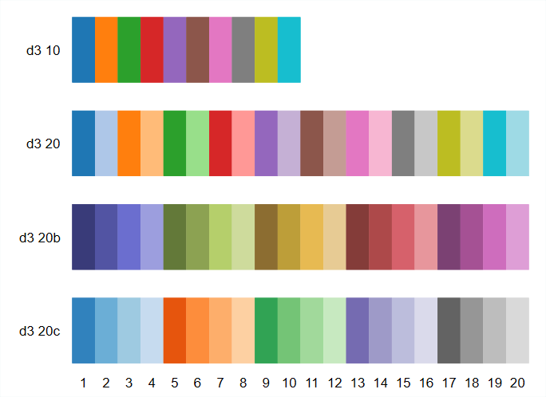
La première palette (3 couleurs): colorpalette ptol, qualitative n(3)
2.9 D3
coloraplette d3, nom_sous_palette [options]- La première palette à 10 couleurs est qualitative
- La seconde palette à 20 couleurs est composée de 10 paires qualitatives, avec un élément plus foncé et un élément claire
- Les troisièmes et quatrième palettes ont 20 couleurs à 5 ensembles qualitatifs (bleu,orange vert, mauve, gris) avec des éléments allant du du plus foncé au plus claire
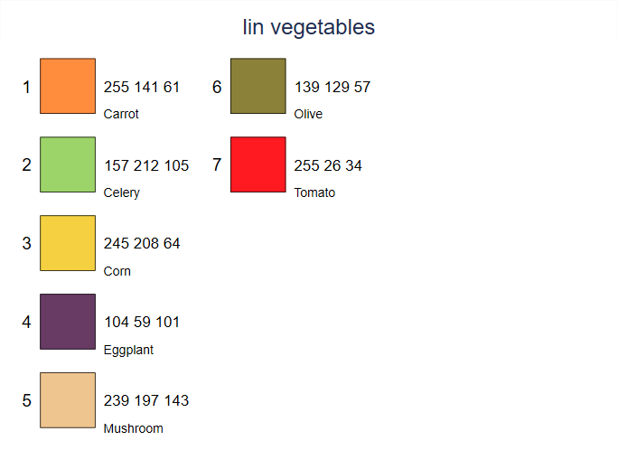
2.10 Spmap
Comme son nom l’indique, il s’agit d’un ensemble de palettes prévues pour générer des cartes.
Ces palettes (et d’autres) sont intégrées dans la commande Stata du même nom (ssc install spmap[M.Pisatti] - help spmap)
coloraplette spmap, nom_sous_palette [options]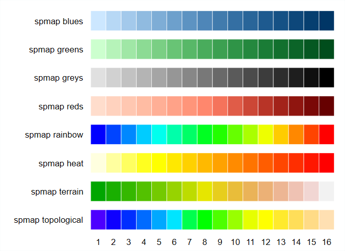
Exemples (palettes reds et rainbow)
* help spmap
use "Italy-RegionsData.dta", clear
spmap relig1 using "Italy-RegionsCoordinates.dta", id(id) ///
clnumber(20) fcolor(Reds2) ocolor(none ..) ///
title("Pct. Catholics without reservations", size(*0.8)) ///
subtitle("Italy, 1994-98" " ", size(*0.8)) ///
legstyle(3) legend(ring(1) position(3)) name(g1, replace) nodraw
spmap relig1 using "Italy-RegionsCoordinates.dta", id(id) ///
clnumber(20) fcolor(Rainbow) ocolor(none ..) ///
title("Pct. Catholics without reservations", size(*0.8)) ///
subtitle("Italy, 1994-98" " ", size(*0.8)) ///
legstyle(3) legend(ring(1) position(3)) name(g2, replace) nodraw
graph combine g1 g2, ysize(9) xsize(20) plotr(color(white)) graphr(color(white))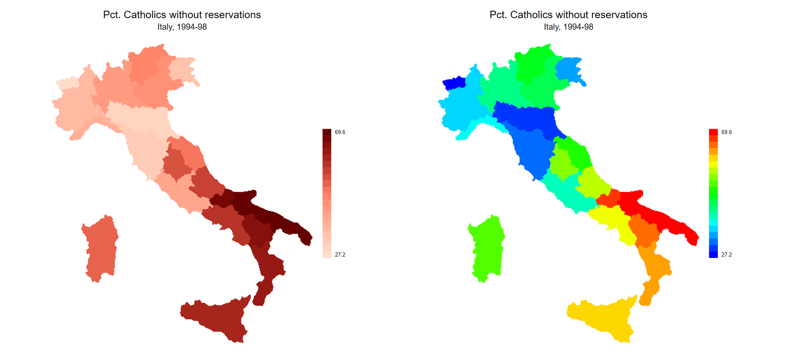
Remarques:
- La commande
spmapne fonctionne pas avecgrstyle set color - Elle intègre au total 45 palettes
Autres palettes contenues dans colorpalette: lin, webcolors, sfso
3 Exemples de graphiques
3.1 Palettes qualitatives
Pyramide des âges et évolution de l’espérance de vie
Le programme pour la pyramide des âges est donné dans l’aide de help tw bar
Programme
- Le seul élément modifié est
grstyle set color NOM_PALETTE [OPTIONS] - La pyramide est définie et exécutée par la fonction
pyramide
3.1.1 S2

3.1.2 HUE

3.1.3 COLORBREWER - DARK2
- Pallete de
colorbrewer - L’intensité pour les courbes a été augmenté de 20%

3.1.4 VIRIDIS

3.2 Palettes séquentielles et divergentes
3.2.1 Barres
Répartition d’une variable ordinale
use nhanes2f, clear
tab health race, nof col
/*
1=poor,... |
, |
5=excellen | 1=white, 2=black, 3=other
t | White Black Other | Total
-----------+---------------------------------+----------
poor | 6.37 13.26 4.50 | 7.05
fair | 15.50 22.28 12.50 | 16.16
average | 27.65 32.97 39.00 | 28.43
good | 25.96 18.05 23.00 | 25.07
excellent | 24.52 13.44 21.00 | 23.29
-----------+---------------------------------+----------
Total | 100.00 100.00 100.00 | 100.00
*/
grstyle init
grstyle set legend, nobox stack
grstyle set plain, horizontal grid compact
grstyle set mesh, horizontal
grstyle set color NOM_PALETTE [, OPTIONS]
catplot health race, ///
percent(race) asyvars legend(pos(3) cols(1)) nodraw name(g1, replace)
catplot health race, ///
percent(race) asyvars stack legend(pos(3) cols(1)) nodraw name(g2,replace)
grc1leg g1 g2, ysize(9) xsize(20) legendfrom(g1) pos(3) plotr(color(white)) graphr(color(white))3.2.1.1 HCL - BLUES
- La taille de la palette a été fixée à 6 couleurs (la variable health a 5 modalité) pour éviter un bleu trop proche du blanc
- Si une modalité est très proche du blanc, il convient de modifié la couleur du background (avec
grstyle:grstyle set imesh, horizontal)
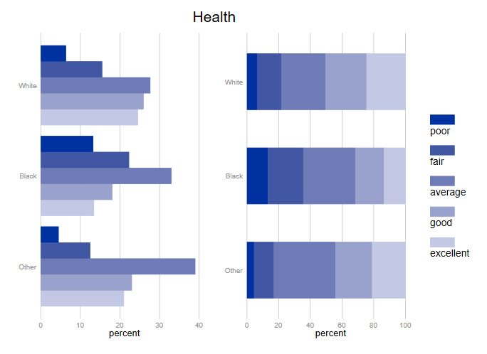
3.2.1.2 VIRIDIS
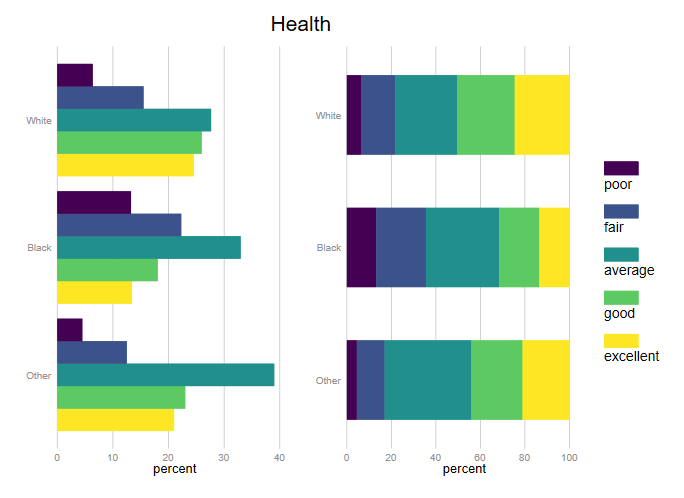
3.2.1.3 MATPLOTLIB -
Les 4 saisons de matplotlib

3.2.2 Bulles - Matplotlib
- Données issues du site https://www.gapminder.org/data/
- Utilisation des palettes matplotlib “4 saisons”:
- Winter: Afrique
- Spring: Asie (+ Océanie)
- Summer: Amériques
- Autumn: Europe
- [gapminder project] graphique animé: https://www.gapminder.org/tools/#$chart-type=bubbles
[Demetris Christodoulou] graphique généré par Stata [avec bien plus d’options]: https://graphworkflow.com/2019/09/23/tribute-to-hans-rosling/
Avec une opacité de 80%. Comme le graphique est combiné, on ne distingue pas très bien les bulles superposées
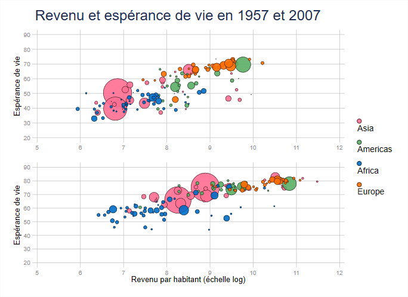
3.2.3 Densité - Matplotlib
- Même données et mêmes palettes que pour les bulles
- Les densités ont été estimées [commande
kdensity] avec comme niveau d’observation les pays:- Asie (+Océanie): N=29
- Africa: N=49
- Americas: N=24
- Europe: N=30
- Avec 80% d’opacité
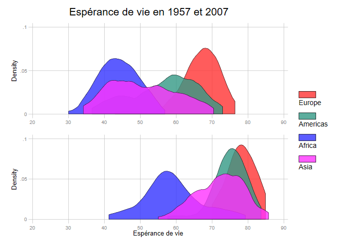
- Avec 50% d’opacité 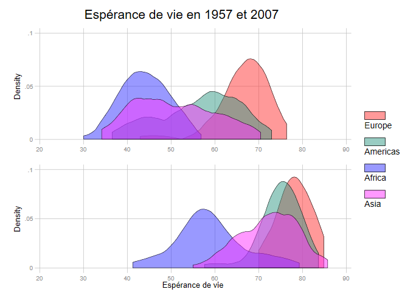
- Avec 80% d’opacité sans contour
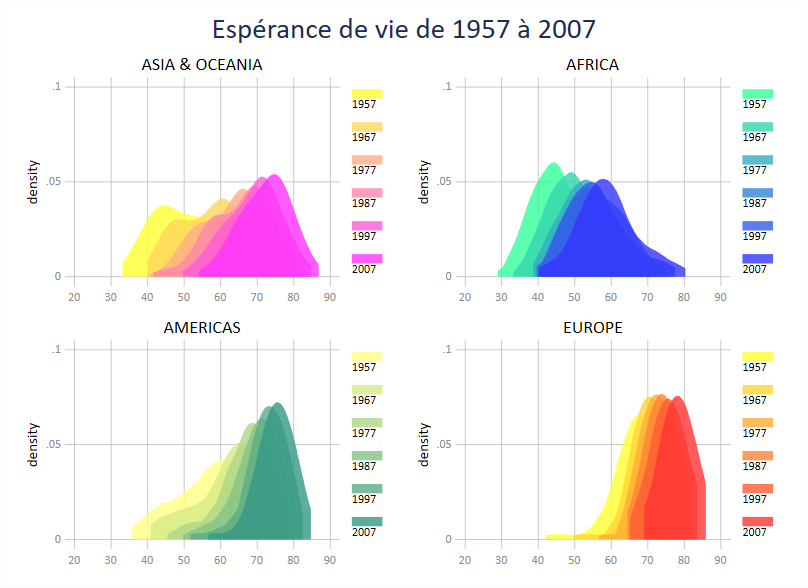
- Avec 80% d’opacité et contour 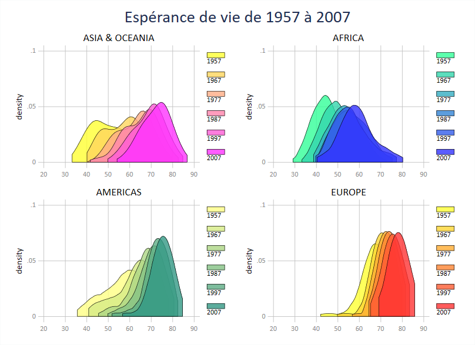
- Avec 50% d’opacité et contour 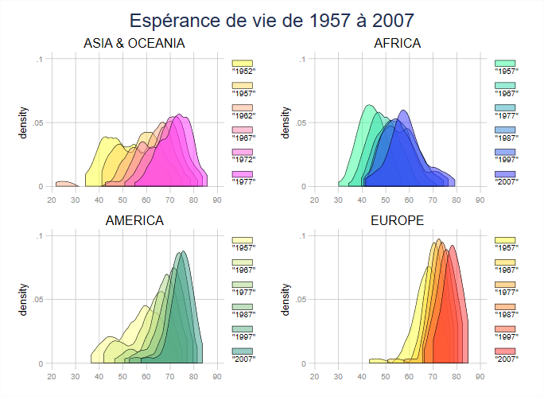
Elements de programme pour le graphique à bulle [année 1957]
use gm2, clear
* Asie et Océanie fusionnée
gen af_lf=lifeexp if continent=="Africa"
gen am_lf=lifeexp if continent=="Americas"
gen as_lf=lifeexp if continent=="Asia" | continent=="Oceania"
gen eu_lf=lifeexp if continent=="Europe"
gen lg = log(gdppercap)
*1957
* Les couleurs n'ont pas été introduites automatiquement car issues de palettes différentes
* L'utilisation d'une palette qualitative le permettrait
grstyle init //s0, replace
grstyle set legend, nobox stack
grstyle set plain, horizontal grid compact
grstyle set mesh, horizontal
local leg "order(1 "Asia" 2 "Americas" 3 "Africa" 4 "Europe")"
local mlc "mlc(black black black black)"
local mlw "mlw(vthin vthin vthin vthin)"
local mc "mc("255 109 146%90" "91 173 102%90" "0 109 200%90" "255 109 0%90")"
tw scatter as_lf am_lf af_lf eu_lf lg [w=pop] if year==1957, ///
`mlc' `mlw' `mc' ///
ylabel(20(10)90) xlabel(5(1)12) ytitle("Espérance de vie") ///
xtitle("") ///
legend(pos(3) col(1)`leg') name(g31, replace) ysize(10) xsize(20)
Elements de programme pour le graphique avec les densités [4 continents en 1957 et 2007]
* Exemple: calcul des densités pour l'Asie
local l 1957 1967 1977 1987 1997 2007
foreach i of local l {
kdensity lifeexp if continent=="Asia" & year==`i', gen(as_x`i' as_d`i') nograph bwidth(3)
}
*[Non reporté: Calcul des densités pour les autres continents]
* Les couleurs n'ont pas été introduites automatiquement car issues de palettes différentes
grstyle init
grstyle set legend, nobox stack
grstyle set plain, horizontal grid compact
grstyle set mesh, horizontal
local leg "order(1 "Europe" 2 "Americas" 3 "Africa" 4 "Asia")"
local lc "lc(black) lw(vthin)"
local fcas fcolor("255 0 255%80")
local fcam fcolor("0 128 102%80")
local fcaf fcolor("0 0 255%80")
local fceu fcolor("255 0 0%80")
tw (area eu_d1957 eu_x1957, `lc' `fceu') ///
(area am_d1957 am_x1957, `lc' `fcam') ///
(area af_d1957 af_x1957, `lc' `fcaf') ///
(area as_d1957 as_x1957,`lc' `fcas') , ///
legend(pos(2) col(1) `leg') ///
ylab(0(0.05)0.1) xlab(20(10)90) ///
xtitle("") ytitle("Density")
Elements de programme pour le graphique avec les densités [Asie de 1957 à 2007 avec 80% d’opcité et contour]
local l 1957 1967 1977 1987 1997 2007
foreach i of local l {
kdensity lifeexp if continent=="Asia" & year==`i', gen(as_x`i' as_d`i') nograph bwidth(3)
}
local l1 lc(black) lw(vthin)
local l 1957 1967 1977 1987 1997 2007
foreach i of local l {
local x `x' area as_d`i' as_x`i', `l1' ||
}
local i = 1
levelsof year, local(l)
foreach val of local l {
local leg `"`leg' label(`i' `""`val'""')"'
local ++i
}
grstyle init s1, replace
grstyle set legend, nobox stack
grstyle set plain, horizontal grid compact
grstyle set mesh, horizontal
grstyle set color matplotlib, spring opacity(80) n(6) reverse
tw `x', ///
legend(`leg' pos(2) col(1)) title("ASIA") ///
xtitle("") ytitle("density") ///
ylab(0(0.05)0.1) xlab(20(10)90)